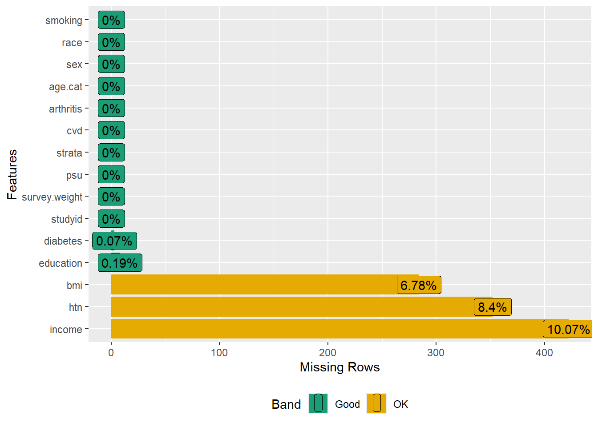

Subpopulations
This tutorial demonstrates how to manage missing data in complex surveys using multiple imputation, focusing on specific subpopulations defined by the study’s eligibility criteria.
Purpose
Let us we are interested in exploring the relationship between rheumatoid arthritis and cardiovascular disease (CVD) among US adults aged 20 years or more. For that, we will use NHANES 2017–2018 dataset, which follows a complex survey design.
The purpose of this example is to demonstrate how to do the missing data analysis with multiple imputation in the context of complex surveys.
The main idea is:
- working with the analytic data
- imputing missing values based on that analytic dataset
- keep count of the ineligible subjects from the full data who are not included in the analytic data
- adding those ineligible subjects back in the imputed datasets, so that we can utilize the survey features and subset the design.
Let us import the dataset:
The dataset (dat.full) contains 9,254 subjects with 15 variables:
Survey information
-
studyid: Respondent sequence number -
survey.weight: Full sample 2 year interview weight -
psu: Masked pseudo PSU -
strata: Masked pseudo strata
Outcome variable
-
cvd: Whether having cardiovascular disease
Exposure variable
-
rheumatoid: Whether having rheumatoid arthritis
Covariates
-
age: age in years at screening sexeducation-
race: Race/Ethnicity -
income: Family income in $ -
bmi: Body Mass Index in kg/m\(^2\) -
smoking: Smoking status -
htn: Having hypertension -
diabetes: Having diabetes
Analytic dataset
Subsetting according to eligibility
Let us create an analytic dataset for
- adults aged 20 years or more
- without missing values in outcome (cvd) or exposure (rheumatoid arthritis).
# Drop < 20 years
dat.with.miss <- subset(dat.full, age >= 20)
# Frequency for outcome and exposure
table(dat.with.miss$cvd, useNA = "always") # 6 missing
#>
#> No Yes <NA>
#> 4872 691 6
table(dat.with.miss$rheumatoid, useNA = "always") # 1375 missing
#>
#> No Yes <NA>
#> 3857 337 1375
# Drop missing in outcome and exposure
# i.e., dataset with missing values only in covariates
dat.analytic <- dat.with.miss[complete.cases(dat.with.miss$cvd),]
dat.analytic <- dat.analytic[complete.cases(dat.analytic$rheumatoid),]
nrow(dat.analytic)
#> [1] 4191As we can see, we have 4,191 participants aged 20 years or more without missing values in outcome or exposure. Let us count the ineligible subjects from the full data and create an indicator variable.
We have 4,191 eligible and 5,063 ineligible subjects based on the eligibility criteria.
General strategy of solution:
- We will build the imputation model on 4,191 eligible subjects, and
- later we will include 5,063 ineligible subjects in the data so that we can utilize survey features.
Table 1
Let us see the summary statistics, i.e., create Table 1 stratified by outcome (cvd). Before that, we will categorize age and recode rheumatoid:
# Categorical age
dat.analytic$age.cat <-
with(dat.analytic, ifelse(age >= 20 & age < 50, "20-49",
ifelse(age >= 50 & age < 65,
"50-64", "65+")))
dat.analytic$age.cat <- factor(dat.analytic$age.cat,
levels = c("20-49", "50-64", "65+"))
table(dat.analytic$age.cat, useNA = "always")
#>
#> 20-49 50-64 65+ <NA>
#> 2280 1097 814 0
# Recode rheumatoid to arthritis
dat.analytic$arthritis <-
car::recode(dat.analytic$rheumatoid, " 'No' = 'No arthritis';
'Yes' = 'Rheumatoid arthritis' ", as.factor = T)
table(dat.analytic$arthritis, useNA = "always")
#>
#> No arthritis Rheumatoid arthritis <NA>
#> 3854 337 0
# Keep only relevant variables
vars <- c("studyid", "survey.weight", "psu", "strata", "cvd",
"arthritis", "age.cat", "sex", "education", "race",
"income", "bmi", "smoking", "htn", "diabetes")
dat.analytic2 <- dat.analytic[, vars]# Create Table 1
vars <- c("arthritis", "age.cat", "sex", "education", "race", "income", "bmi", "smoking",
"htn", "diabetes")
tab1 <- CreateTableOne(vars = vars, strata = "cvd",
data = dat.analytic2, includeNA = F,
addOverall = T, test = F)
print(tab1, format = "f", showAllLevels = T)
#> Stratified by cvd
#> level Overall No
#> n 4191 3823
#> arthritis No arthritis 3854 3580
#> Rheumatoid arthritis 337 243
#> age.cat 20-49 2280 2240
#> 50-64 1097 979
#> 65+ 814 604
#> sex Male 2126 1884
#> Female 2065 1939
#> education Less than high school 828 728
#> High school 2292 2094
#> College graduate or above 1063 993
#> race White 1275 1113
#> Black 998 898
#> Hispanic 1015 958
#> Others 903 854
#> income less than $20,000 659 557
#> $20,000 to $74,999 1967 1796
#> $75,000 and Over 1143 1079
#> bmi (mean (SD)) 29.28 (7.19) 29.20 (7.18)
#> smoking Never smoker 2570 2427
#> Previous smoker 882 726
#> Current smoker 739 670
#> htn No 1424 1380
#> Yes 2415 2107
#> diabetes No 3622 3396
#> Yes 566 424
#> Stratified by cvd
#> Yes
#> n 368
#> arthritis 274
#> 94
#> age.cat 40
#> 118
#> 210
#> sex 242
#> 126
#> education 100
#> 198
#> 70
#> race 162
#> 100
#> 57
#> 49
#> income 102
#> 171
#> 64
#> bmi (mean (SD)) 30.09 (7.29)
#> smoking 143
#> 156
#> 69
#> htn 44
#> 308
#> diabetes 226
#> 142Check missingness using a plot
Now we will see the percentage of missing values in the variables.
DataExplorer::plot_missing(dat.analytic2)
#> Warning: `aes_string()` was deprecated in ggplot2 3.0.0.
#> ℹ Please use tidy evaluation idioms with `aes()`.
#> ℹ See also `vignette("ggplot2-in-packages")` for more information.
#> ℹ The deprecated feature was likely used in the DataExplorer package.
#> Please report the issue at
#> <https://github.com/boxuancui/DataExplorer/issues>.
We have about 10% missing values in income, followed by hypertension (8.4%), bmi (6.8%), education (0.2%), and diabetes (0.1%).
Dealing with missing values in covariates
- Now we will perform multiple imputation to deal with missing values only in covariates. We will use the
dat.analytic2dataset that contains missing values in the covariates but no missing values in the outcome or exposure. - For this exercise, we will consider 5 imputed datasets, 3 iterations, and the predictive mean matching method for bmi and income.
- We have already set up the data such that the variables are of appropriate types, e.g., numeric bmi, factor age, sex, and so on.
- We will use the strata variable as an auxiliary variable in the imputation model but not the survey weight or PSU variable.
- Now we will set up the initial model and set up the methods and predictor matrix before imputing 5 datasets.
Step 0: Set up the imputation model
In this tutorial, we used stata as an auxiliary variable. There are two ways we can deal with this:
- Use
stratato predict other variables, but don’t imputestrata:meth["strata"] <- ""(this skips strata’s imputation). In our case, sincestratahas no missing observations, this step is unnecessary, as MICE will automatically not impute fully observed variables. However, this strategy is useful for blocking the imputation of auxiliary variables with missing data.
Also, do not change the
predictorMatrixfor auxiliary variables, allowing them (e.g., strata in our case) to be used as predictors for other variables.Setting
pred["strata", ] <- 0would remove all predictors forstrata, which meansstratacannot be imputed because there are no variables to predict its missing values. However,stratacan still be used as a predictor for other variables. Ifstratahas no missing values (as in our case), this step is unnecessary since MICE does not attempt to impute fully observed variables.
-
Impute
strataand use it as a predictor (if strata had missing values): Ifstratahad missing data, you wouldn’t need to change anything inpredictorMatrixormethod. MICE would imputestrataand use it as a predictor by default. In our case, sincestratahas no missing values, imputation is not necessary. Note that:
You should not set
pred["strata", ] <- 1because this would incorrectly makestrataa predictor for itself, which is invalid. MICE automatically handles this by setting diagonal entries to 0, so you don’t need to manually ensure this unless you’ve changed it. If you do so (set the row values to 1), you need to then setpred["strata", "strata"] <- 0to ensurestratadoes not predict itself.Do not use
pred[, "strata"] <- 0because this would preventstratafrom being used as a predictor for other variables, which is contrary to the idea of using it as an auxiliary variable.
Whether to impute or not impute auxiliary variables depends on their role in the analysis and the potential impact of their missing data. If they are strong predictors or are necessary for future analyses, imputing them may be justified. However, if their missingness is not consequential, and imputing them introduces more noise or complexity, it may be better to leave them unimputed.
# Step 0: Set imputation model
ini <- mice(data = dat.analytic2, maxit = 0, print = FALSE)
pred <- ini$pred
kable(pred)| studyid | survey.weight | psu | strata | cvd | arthritis | age.cat | sex | education | race | income | bmi | smoking | htn | diabetes | |
|---|---|---|---|---|---|---|---|---|---|---|---|---|---|---|---|
| studyid | 0 | 1 | 1 | 1 | 1 | 1 | 1 | 1 | 1 | 1 | 1 | 1 | 1 | 1 | 1 |
| survey.weight | 1 | 0 | 1 | 1 | 1 | 1 | 1 | 1 | 1 | 1 | 1 | 1 | 1 | 1 | 1 |
| psu | 1 | 1 | 0 | 1 | 1 | 1 | 1 | 1 | 1 | 1 | 1 | 1 | 1 | 1 | 1 |
| strata | 1 | 1 | 1 | 0 | 1 | 1 | 1 | 1 | 1 | 1 | 1 | 1 | 1 | 1 | 1 |
| cvd | 1 | 1 | 1 | 1 | 0 | 1 | 1 | 1 | 1 | 1 | 1 | 1 | 1 | 1 | 1 |
| arthritis | 1 | 1 | 1 | 1 | 1 | 0 | 1 | 1 | 1 | 1 | 1 | 1 | 1 | 1 | 1 |
| age.cat | 1 | 1 | 1 | 1 | 1 | 1 | 0 | 1 | 1 | 1 | 1 | 1 | 1 | 1 | 1 |
| sex | 1 | 1 | 1 | 1 | 1 | 1 | 1 | 0 | 1 | 1 | 1 | 1 | 1 | 1 | 1 |
| education | 1 | 1 | 1 | 1 | 1 | 1 | 1 | 1 | 0 | 1 | 1 | 1 | 1 | 1 | 1 |
| race | 1 | 1 | 1 | 1 | 1 | 1 | 1 | 1 | 1 | 0 | 1 | 1 | 1 | 1 | 1 |
| income | 1 | 1 | 1 | 1 | 1 | 1 | 1 | 1 | 1 | 1 | 0 | 1 | 1 | 1 | 1 |
| bmi | 1 | 1 | 1 | 1 | 1 | 1 | 1 | 1 | 1 | 1 | 1 | 0 | 1 | 1 | 1 |
| smoking | 1 | 1 | 1 | 1 | 1 | 1 | 1 | 1 | 1 | 1 | 1 | 1 | 0 | 1 | 1 |
| htn | 1 | 1 | 1 | 1 | 1 | 1 | 1 | 1 | 1 | 1 | 1 | 1 | 1 | 0 | 1 |
| diabetes | 1 | 1 | 1 | 1 | 1 | 1 | 1 | 1 | 1 | 1 | 1 | 1 | 1 | 1 | 0 |
# Use the strata variable as an auxiliary variable in the imputation model
pred["strata",]
#> studyid survey.weight psu strata cvd
#> 1 1 1 0 1
#> arthritis age.cat sex education race
#> 1 1 1 1 1
#> income bmi smoking htn diabetes
#> 1 1 1 1 1
# Do not change the pred matrix for strata.
# This allows strata to be used as a predictor for other variables.
# Do not use id, survey weight or PSU variable as auxiliary variables
pred[, c("studyid", "psu", "survey.weight")] <- 0
# Remove them as predictors for other variables
kable(pred)| studyid | survey.weight | psu | strata | cvd | arthritis | age.cat | sex | education | race | income | bmi | smoking | htn | diabetes | |
|---|---|---|---|---|---|---|---|---|---|---|---|---|---|---|---|
| studyid | 0 | 0 | 0 | 1 | 1 | 1 | 1 | 1 | 1 | 1 | 1 | 1 | 1 | 1 | 1 |
| survey.weight | 0 | 0 | 0 | 1 | 1 | 1 | 1 | 1 | 1 | 1 | 1 | 1 | 1 | 1 | 1 |
| psu | 0 | 0 | 0 | 1 | 1 | 1 | 1 | 1 | 1 | 1 | 1 | 1 | 1 | 1 | 1 |
| strata | 0 | 0 | 0 | 0 | 1 | 1 | 1 | 1 | 1 | 1 | 1 | 1 | 1 | 1 | 1 |
| cvd | 0 | 0 | 0 | 1 | 0 | 1 | 1 | 1 | 1 | 1 | 1 | 1 | 1 | 1 | 1 |
| arthritis | 0 | 0 | 0 | 1 | 1 | 0 | 1 | 1 | 1 | 1 | 1 | 1 | 1 | 1 | 1 |
| age.cat | 0 | 0 | 0 | 1 | 1 | 1 | 0 | 1 | 1 | 1 | 1 | 1 | 1 | 1 | 1 |
| sex | 0 | 0 | 0 | 1 | 1 | 1 | 1 | 0 | 1 | 1 | 1 | 1 | 1 | 1 | 1 |
| education | 0 | 0 | 0 | 1 | 1 | 1 | 1 | 1 | 0 | 1 | 1 | 1 | 1 | 1 | 1 |
| race | 0 | 0 | 0 | 1 | 1 | 1 | 1 | 1 | 1 | 0 | 1 | 1 | 1 | 1 | 1 |
| income | 0 | 0 | 0 | 1 | 1 | 1 | 1 | 1 | 1 | 1 | 0 | 1 | 1 | 1 | 1 |
| bmi | 0 | 0 | 0 | 1 | 1 | 1 | 1 | 1 | 1 | 1 | 1 | 0 | 1 | 1 | 1 |
| smoking | 0 | 0 | 0 | 1 | 1 | 1 | 1 | 1 | 1 | 1 | 1 | 1 | 0 | 1 | 1 |
| htn | 0 | 0 | 0 | 1 | 1 | 1 | 1 | 1 | 1 | 1 | 1 | 1 | 1 | 0 | 1 |
| diabetes | 0 | 0 | 0 | 1 | 1 | 1 | 1 | 1 | 1 | 1 | 1 | 1 | 1 | 1 | 0 |
- The rows represent the variables that can be imputed. The entries in each row show which variables will be used as predictors to impute the variable corresponding to that row.
- The columns represent the variables that can be used as predictors to impute other variables. An entry of 1 in a cell means that the corresponding variable (from the column) will be used to predict the variable represented by the row.
-
pred[, c("studyid", "psu", "survey.weight")] <- 0action sets all values in the columns forstudyid,psu, andsurvey.weightto 0. Effectively, it tells MICE not to use them as predictors when imputing other variables. In other words, these variables will not be used to predict missing values in other variables.
# Set imputation method
meth <- ini$meth
meth["bmi"] <- "pmm"
meth["income"] <- "pmm"
meth
#> studyid survey.weight psu strata cvd
#> "" "" "" "" ""
#> arthritis age.cat sex education race
#> "" "" "" "polyreg" ""
#> income bmi smoking htn diabetes
#> "pmm" "pmm" "" "logreg" "logreg"
meth["strata"] # method used for strata to be imputed
#> strata
#> ""
# meth["strata"] <- "" # you can skip auxiliary variable's imputation
# Modify the method to skip imputation of "studyid", "psu", and "survey.weight"
meth["studyid"] <- ""
meth["psu"] <- ""
meth["survey.weight"] <- ""
meth
#> studyid survey.weight psu strata cvd
#> "" "" "" "" ""
#> arthritis age.cat sex education race
#> "" "" "" "polyreg" ""
#> income bmi smoking htn diabetes
#> "pmm" "pmm" "" "logreg" "logreg"- There is no missing for studyid, survey.weight, psu, strata, cvd, arthritis, age, sex, race, smoking. Hence, no method is assigned for these variables.
- For education,
polyreg(Polytomous logistic regression) will be used. - Similarly, we will use
pmm(Predictive mean matching) for bmi, income and usedlogreg(Logistic regression) for htn, diabetes. See the Imputation chapter to see how the PMM method works.
Step 1: Imputing missing values using mice
1.1 Imputing dataset for eligible subjects
Now we will combine m = 5 datasets and create a stacked dataset. This dataset should contain 5*4,191 = 20,955 rows.
Note that age has no missing values, and everyone is above 20.
Let’s see whether there is any missing value after imputation:

- There is no missing value after imputation.
- As we can see, there is an additional variable (
.imp) in the imputed dataset. This.impgoes from 1 to m = 5, indicating the first to the fifth imputed datasets.
1.2 Preparing dataset for ineligible subjects
The next task is adding the ineligible subjects in the imputed datasets, so that we can set up the survey design on the full dataset and then subset the design.
Now we will subset the data for ineligible subjects and create m = 5 copies.
# Subset for ineligible
dat.ineligible <- subset(dat.full, ineligible == 1)
# Create m = 5 datasets with .imp 1 to m = 5
dat31 <- dat.ineligible; dat31$.imp <- 1
dat32 <- dat.ineligible; dat32$.imp <- 2
dat33 <- dat.ineligible; dat33$.imp <- 3
dat34 <- dat.ineligible; dat34$.imp <- 4
dat35 <- dat.ineligible; dat35$.imp <- 5The next step is combining ineligible datasets. Before merging the stacked dataset for ineligible subjects to the imputed stacked dataset for eligible subjects, we must ensure the variable names are the same.
We should have missing value in this ineligible part of the data:

1.3 Combining eligible (imputed) and ineligible (unimputed) subjects
As we can see, the variable names are different in the two datasets. Particularly, arthritis and age.cat variables are not available in the dat.ineligible.stacked dataset. Now we will recode these variables in the same format as done for impdata:
# Categorical age
summary(dat.ineligible.stacked$age)
#> Min. 1st Qu. Median Mean 3rd Qu. Max.
#> 0.00 5.00 12.00 23.25 41.00 80.00
dat.ineligible.stacked$age.cat <-
with(dat.ineligible.stacked,
ifelse(age >= 20 & age < 50, "20-49",
ifelse(age >= 50 & age < 65, "50-64",
ifelse(age >= 65, "65+", NA))))
dat.ineligible.stacked$age.cat <-
factor(dat.ineligible.stacked$age.cat,
levels = c("20-49", "50-64", "65+"))Note that, we are assigning anyone with less than 20 age as missing.
Note: In the above step, we could also create two variables with missing values rather than recoding. The reason is that we will subset the design; no matter whether we recode or create missing values for ineligible, the only information we need from ineligible subjects is their survey features when creating the design.
The next step is to combine these two datasets (impdata and dat.ineligible.stacked).
Now we will merge ineligible and eligible subjects to make the full dataset of 5 \(\times\) 9,254 = 46,270 subjects.
1.4 Prepating Survey design and subpopulation of eligible
The next step is to create the design on full dataset [with eligible (imputed) and ineligible (unimputed) subjects] of 5 \(\times\) 9,254 = 46,270 subjects and subset the design for 5 \(\times\) 4,716 = 23,580 subjects.
m <- 5
allImputations <- imputationList(lapply(1:m, function(n)
subset(impdata2, subset=.imp==n)))
# Step 2: Survey data analysis
w.design0 <- svydesign(ids = ~psu,
weights = ~survey.weight,
strata = ~strata,
data = allImputations,
nest = TRUE) # Design on full data
w.design <- subset(w.design0, ineligible == 0) # Subset the designWe can see the length of the subsetted design:
The subsetted design contains 4,191 subjects with 17 variables and 5 imputed datasets. Now we will run the design-adjusted logistic regression on and pool the estimate using Rubin’s rule:
Step 2: Design adjusted regression analysis
# Design-adjusted logistic regression
fit <- with(w.design,
svyglm(I(cvd == "Yes") ~ arthritis + age.cat +
sex + education + race + income + bmi +
smoking + htn + diabetes,
family = quasibinomial))
res <- exp(as.data.frame(cbind(coef(fit[[1]]),
coef(fit[[2]]),
coef(fit[[3]]),
coef(fit[[4]]),
coef(fit[[5]]))))
names(res) <- paste("OR from m =", 1:5)
res.rounded <- round(t(res),2)
kable(res.rounded)| (Intercept) | arthritisRheumatoid arthritis | age.cat50-64 | age.cat65+ | sexFemale | educationHigh school | educationCollege graduate or above | raceBlack | raceHispanic | raceOthers | income$20,000 to $74,999 | income$75,000 and Over | bmi | smokingPrevious smoker | smokingCurrent smoker | htnYes | diabetesYes | |
|---|---|---|---|---|---|---|---|---|---|---|---|---|---|---|---|---|---|
| OR from m = 1 | 0.02 | 2.12 | 4.72 | 13.04 | 0.46 | 0.73 | 0.73 | 0.94 | 0.53 | 0.86 | 0.47 | 0.32 | 1.03 | 1.57 | 1.44 | 1.34 | 3.05 |
| OR from m = 2 | 0.02 | 2.10 | 4.75 | 13.24 | 0.46 | 0.72 | 0.73 | 0.99 | 0.54 | 0.87 | 0.53 | 0.36 | 1.03 | 1.57 | 1.48 | 1.28 | 3.06 |
| OR from m = 3 | 0.02 | 2.12 | 4.56 | 11.91 | 0.47 | 0.71 | 0.71 | 0.97 | 0.53 | 0.84 | 0.49 | 0.35 | 1.02 | 1.60 | 1.43 | 1.49 | 3.14 |
| OR from m = 4 | 0.02 | 2.07 | 4.64 | 12.72 | 0.46 | 0.71 | 0.73 | 0.95 | 0.53 | 0.88 | 0.52 | 0.34 | 1.03 | 1.58 | 1.49 | 1.45 | 2.96 |
| OR from m = 5 | 0.02 | 2.11 | 4.58 | 12.29 | 0.46 | 0.74 | 0.77 | 0.92 | 0.53 | 0.85 | 0.43 | 0.29 | 1.02 | 1.59 | 1.43 | 1.51 | 3.11 |
Step 3: Pooling estimates
Conclusion
Among US adults aged 20 years or more, the odds of CVD was approximately twice among those with rheumatoid arthritis than no arthritis.